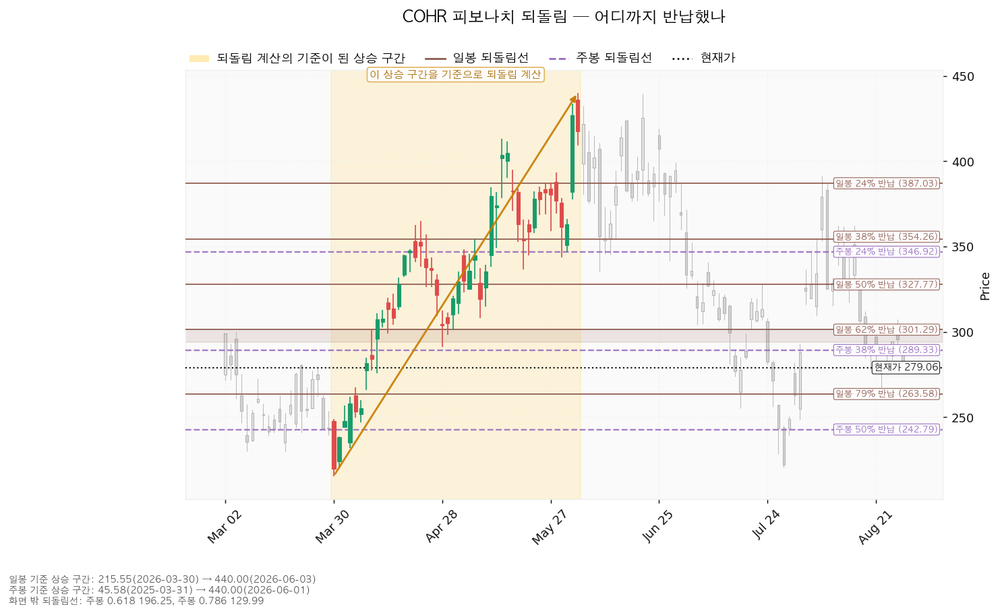

Coherent Corp. (COHR) 종목 리포트 · 2026-08-31
코히어런트(Coherent, COHR)는 데이터센터·통신망에 들어가는 광트랜시버와 레이저, 화합물 반도체 소재를 만드는 미국 기업입니다. 2022년 II-VI와 합병해 현재의 사명을 쓰고 있습니다.
| 구분 | 가격 | 판정 방식 | 현재 상태 |
|---|---|---|---|
| 폐기선 | 170.95달러 (-38.7%) | 이탈 후 3거래일 내 회복 실패 + 반등에서 저항으로 확인 | 유지 중 — 단, 현재가에서 하루 평균 변동폭의 3.90배나 떨어져 있어 실무상 무효화 기준으로 작동하지 않습니다(아래 '논지 무효화' 참조) |
| 회복선 | 287.16달러 (+2.9%) | 일봉 종가로 회복한 뒤 되돌림에서 지지되는지 | 회복 대기 |
| 확인선 | 430.89달러 (+54.4%) | 일봉 종가 돌파 후 되돌림 지지 확인 | 미돌파 |
1. 종목 개요
| 항목 | 값 | 해설 |
|---|---|---|
| 현재가 | 279.06달러 | 2026-08-28 기준 |
| EMA20 (20일 지수이동평균, 단기 추세선) | 302.02달러 | 현재가가 -7.6% 아래 |
| EMA50 (50일 지수이동평균, 중기 추세선) | 315.20달러 | 현재가가 -11.5% 아래, 단기선이 중기선 아래 = 역배열 |
| RSI(14) (과열·침체 지표, 0~100) | 43.63 | 중립 하단. 침체(30 이하) 아님 |
| ATR (하루 평균 변동폭) | 27.71달러 ≈ 주가의 9.93% | 하루에 평균 ±10% 가까이 움직이는 종목 |
| 횡보 박스 | 170.95 ~ 430.89달러 (유효) | 현재가는 박스 높이의 41.6% 지점 |
| 추세 / 국면 | 하락 / 횡보 레인지(하단 사수 조건부) | 구조는 유지되나 방향은 아래 |
박스는 어느 구간을 보고 판정했는가
조회된 일봉은 753일치이며, 엔진은 40·90·180봉 세 구간을 모두 시험한 뒤 최근 180일(약 9개월) 창을 골랐습니다. 세 후보 성적은 다음과 같습니다.
| 관측 창 | 가격이 박스 안에 머문 비율 | 방향성(0에 가까울수록 순수 횡보) | 박스 폭 |
|---|---|---|---|
| 40봉 | 92.5% | 0.027 | 하루 변동폭의 4.13배 |
| 90봉 | 97.8% | 0.31 | 6.67배 |
| 180봉 (채택) | 99.4% | 0.454 | 9.38배 |
채택된 박스는 폭이 하루 변동폭의 9.38배, 위아래 차이가 +152.1%에 달합니다. 박스가 이렇게 넓기 때문에 아래쪽 경계인 170.95달러가 현재가에서 -38.7%나 떨어져 있는 것이며, 이것이 폐기선을 실무 기준으로 쓸 수 없는 이유입니다.
박스 안쪽에서 무슨 일이 있었나 — 매집인가 재분산인가
박스 모양만으로는 매집과 재분산을 구분할 수 없습니다. 갈리는 것은 안쪽에서 벌어지는 일입니다. 여기서 매집은 큰손이 물량을 모으느라 가격이 옆으로 가는 것이고, 재분산은 반대로 물량을 넘기느라 옆으로 가는 것입니다. 겉모습은 똑같은 사각형입니다.
- 직전 구간 진입 방향: 이 박스 직전 구간은 52.48~145.00달러 박스였고, 가격은 그 위로 뚫고 올라와 지금 박스에 들어왔습니다. 즉 아래에서 올라온 자리이며, 재축적이냐 분산이냐의 갈림길입니다.
- 지지 테스트 6회 (2026-01-09 ~ 2026-02-17, 저점 167.50 / 206.14 / 208.04 / 175.24 / 209.23 / 204.57달러): 테스트 때의 거래량은 평균 대비 1.41 / 1.04 / 1.11 / 2.26 / 1.11 / 0.77배로, 전반적으로 늘어나는 흐름이었습니다. 지지를 확인할 때 매도 거래량이 늘어나는 것은 매집의 반대 신호입니다.
- 저점 절상 여부: 박스 안에서 저점은 절상됐습니다. 이쪽은 매집 방향의 신호입니다.
- 상승봉 대 하락봉 거래량비: 0.94 — 하락하는 날의 거래량이 근소하게 더 많습니다.
- 종합 판정: 중립. 매집 우위도, 분산 우위도 아닙니다.
Wyckoff 신호와 국면
박스는 유효하게 성립했고 엔진은 신호를 산출할 조건을 갖췄습니다. 그런데 이 박스 구간에서 속임수 하락(spring)·속임수 상승(upthrust)·강세 확인(SOS)·약세 확인(SOW) 어느 것도 나오지 않았습니다. 판정 보류가 아니라, 실제로 신호가 없었던 것입니다. 국면 후보는 하락 국면(markdown) 이며, 근거는 하락 추세·이동평균 역배열·기울기 음수입니다. 다만 박스 안쪽 판정이 중립이라는 점에서, 이 하락 국면 후보는 아직 재분산으로 확정된 것이 아닙니다.

2. 피보나치 되돌림 — 일봉과 주봉이 전혀 다른 이야기를 합니다
두 시간대 모두 계산에 쓸 상승 구간이 유효하게 잡혔습니다.
| 기준 | 상승 구간 | 구간 크기 | 현재가 279.06달러의 위치 |
|---|---|---|---|
| 일봉 | 215.55달러(2026-03-30) → 440.00달러(2026-06-03) | 하루 변동폭의 8.1배 | 62% 반납(301.29)과 79% 반납(263.58) 사이 |
| 주봉 | 45.58달러(2025-03-31) → 440.00달러(2026-06-01) | 6.46배 | 38% 반납(289.33) 바로 아래 |
일봉 되돌림 수치: 24% 387.03 / 38% 354.26 / 50% 327.78 / 62% 301.29 / 79% 263.58달러. 주봉 되돌림 수치: 24% 346.92 / 38% 289.33 / 50% 242.79 / 62% 196.25 / 79% 129.99달러.
올해 3~6월 상승분은 이미 62% 넘게 반납했지만, 2025년 3월부터의 큰 상승분 기준으로는 아직 38%밖에 반납하지 않았습니다. 단기 상승 구조는 대부분 무너졌고 장기 상승 구조는 아직 살아 있다는 뜻이며, 이 리포트가 "신규 매수 보류"이면서 "폐기 판정"은 아닌 이유입니다.

3. 세 시나리오
(1) 상승 전환
- 조건: 287.16달러를 일봉 종가로 회복한 뒤 지지 → 이후 430.89달러 종가 돌파
- 구조: 속임수 하락 확인 → 강세 확인 → 되돌림 지지 → 상승 국면
- 행동: 287.16달러 회복과 지지가 확인된 뒤 분할 진입, 430.89달러 돌파 시 비중 확대
(2) 횡보 지속 — 매물 소화 국면이며 부정적 신호가 아닙니다
- 조건: 170.95달러를 지키면서 430.89달러 아래에서 박스 유지
- 구조: 구조는 그대로 유지됩니다. 3~6월 상승분을 소화하는 데 시간이 필요한 국면입니다.
- 행동: 신규 진입은 보류하되 다음 세 가지를 추적하십시오.
- 지지 테스트 때 매도 거래량이 줄어드는지 (현재 관측: 늘어나는 중)
- 저점이 계속 절상되는지 (현재 관측: 절상 중)
- 상승할 때 거래량과 캔들 폭이 확대되는지 (현재 관측: 상승봉/하락봉 거래량비 0.94로 하락 쪽이 근소 우위)
- 세 항목 중 첫째와 셋째가 개선되면 재축적으로, 둘째까지 무너지면 재분산으로 기웁니다.
(3) 시나리오 폐기
- 조건: 170.95달러 이탈 후 3거래일 내 종가 회복 실패 + 반등에서 그 가격이 저항으로 확인
- 구조: 매집이 아니라 재분산 — 추가 저점 갱신 가능성을 엽니다
- 행동: 포지션 정리 후, 투매가 한 번 크게 나오고 새 박스가 만들어질 때까지 관망
- 단, 이 조건은 현재가에서 -38.7% 떨어져 있어 실질적인 판단 기준으로 쓸 수 없습니다.
4. 조건부 셋업
엔진이 산출한 셋업은 하나뿐입니다. 하락·중립 국면이므로 되돌림 저가매수는 제시되지 않으며, 저항을 종가로 회복했을 때만 롱으로 전환하는 형태입니다. 개별 종목에 매도(숏) 셋업은 제시하지 않습니다.
| 항목 | 회복 매수 (reclaim_long) |
|---|---|
| 방향 | 롱 |
| 진입 | 287.16달러 (현재가 +2.9%, 하루 변동폭의 0.29배) |
| 손절 | 273.31달러 |
| 손절 근거 | 진입 기준선 287.16달러에서 하루 변동폭의 0.5배 아래. 진입 근거가 겹친 구간(286.08~289.33달러)보다 아래에 놓여 있습니다 |
| 목표 | 302.62달러 (현재가 +8.4%) |
| 손익비 | 1 : 1.12 |
| 청산 계획 | 분할 없이 단일 목표 — 중간 레벨이 없어 T1에서 100% 청산이며, 본전 손절 이동 단계가 없습니다. 전 구간 손익비도 1.12로 동일하고, 하한 손익비는 산출되지 않았습니다 |
| 구조 증명도 | 회복 확인형 (가장 높은 등급, 가중치 1.0) — 저항을 종가로 회복한 뒤에만 들어가므로 진입가는 불리하지만 구조가 먼저 증명됩니다 |
| 진입 근거 3개 겹침 | 지지·저항 선반(6회 반응) + 역할 전환(저항→지지) + 주봉 0.382 되돌림 / 겹침 점수 3.7, 구간 286.08~289.33달러 |
| 목표 근거 7개 겹침 | 라운드피겨(300) + 일봉 0.618 되돌림 + EMA20 + 스윙저점 + 지지·저항 선반(6회 반응) + 역할 전환(저항→지지) + 최근 반응(38봉 전) / 겹침 점수 6.5(전체 1위), 구간 300.00~304.185달러 |
대표 셋업은 이 회복 매수입니다. 선정 이유는 엔진 설명 그대로 "손익비 1.12 × 구조 증명도(회복 확인형) × 근거 겹침 3.7점"입니다. 셋업이 하나뿐이라 손익비 1등과 대표가 어긋나는 상황은 발생하지 않았습니다. 다만 손익비 1.12는 1을 겨우 넘긴 수준이라는 점을 분명히 해둡니다 — 이겼을 때 버는 돈이 졌을 때 잃는 돈의 1.12배에 불과하므로, 승률이 조금만 떨어져도 기대값이 음수가 됩니다.

현재가 추격은 권장하지 않습니다 — 대기 좌표
저항 회복이 확인되기 전이므로 지금 가격에서 따라 사는 것은 권장되지 않습니다. 대기할 좌표는 다음과 같습니다.
- 진입 후보 레벨: 259.57달러 (현재가 -7.0%) — 근거 4개 겹침: 스윙저점 + 라운드피겨(260) + 일봉 0.786 되돌림 + 최근 반응(4봉 전). 겹침 점수 3.3, 구간 255.14~263.58달러.
- 이동평균 투영치(5봉 후): EMA20 302.02 → 292.98달러, EMA50 315.20 → 308.65달러.
5. 셋업의 도구 적합성 — 부적합 판정
이 종목은 하루 평균 변동폭이 주가의 9.93%로, 기준선인 8%를 크게 넘습니다. 그런데 셋업의 폭은 다음과 같습니다.
| 구간 | 폭 | 하루 평균 변동폭 대비 |
|---|---|---|
| 진입 287.16 → 손절 273.31 | 13.85달러 (진입가의 4.82%) | 0.50배 |
| 진입 287.16 → 목표 302.62 | 15.46달러 | 0.56배 |
진입에서 손절까지도, 진입에서 목표까지도 하루 평균 변동폭의 절반 남짓입니다. 왕복 전체가 평범한 하루 안에 다 들어갑니다. 이런 셋업은 판단이 맞아도 그와 무관한 하루치 흔들림으로 손절될 수 있습니다. 실제로 손익비 1.12는 이 구조에서 나온 숫자이며, 목표와 손절이 둘 다 좁아 상쇄된 결과입니다.
대안 두 가지를 함께 제시합니다.
1. 비중 축소 후 집행: 회복이 확인되면 평소의 절반 이하 비중으로만 들어가고, 손절 273.31달러가 하루 안에 닿을 수 있다는 것을 전제로 재진입 여지를 남겨둡니다. 손절 폭이 좁다고 해서 체결 확률이 낮아지지는 않으므로, 줄여야 하는 것은 손절 폭이 아니라 금액입니다. 2. 더 긴 시계로 갈아타기: 엔진이 제시한 다음 진입 후보 259.57달러(겹침 구간 255.14~263.58달러)까지 기다렸다가, 하루 변동폭 1배 이상을 감내하는 폭으로 잡고 12개월 시계에서 보유하는 방식입니다. 다만 이 변형에 대한 손익비는 엔진이 산출하지 않았으므로 수치를 제시하지 않습니다.
6. 컨센서스 교차검증
(a) 배수는 후행·선행 둘 다 봅니다
| 구분 | 값 | 기준 주당순이익 |
|---|---|---|
| 후행 PER (이미 발표된 실적 기준) | 67.60배 | 4.13달러 |
| 선행 PER (앞으로 1년 예상 실적 기준) | 20.02배 | 13.95달러 |
후행 67.60배와 선행 20.02배가 3배 넘게 벌어져 있다는 사실 자체가 핵심 정보입니다. 벌어진 이유는 이익이 급격히 늘어나는 구간이기 때문입니다. 컨센서스 이익 성장률은 당해 연도 +67.8%(주당 9.41달러 전망), 다음 연도 +48.2%(주당 13.95달러 전망)입니다. 후행 배수 하나만 보고 "이미 비싸게 매겨져 있다"고 말하는 것은 이 구조를 거꾸로 읽는 것입니다.
(b) 목표주가는 평균이 아니라 분포로 봅니다
애널리스트 21명, 투자의견 매수(buy).
| 구분 | 목표주가 | 현재가 대비 |
|---|---|---|
| 최저 | 280.00달러 | +0.3% |
| 평균 | 416.09달러 | +49.1% |
| 최고 | 500.00달러 | +79.2% |
현재가 279.06달러는 21명 전원의 목표주가 가운데 가장 낮은 280.00달러보다도 아래에 있습니다. 다만 그 차이는 +0.3%에 불과하므로, "전원의 목표 아래"라는 표현이 큰 안전마진을 뜻하지는 않습니다. 정확히 말하면 가격이 컨센서스 분포의 맨 아래 끝에 막 닿은 상태입니다.
(c) 하락의 정체 — 배수 수축이지 사업 악화가 아닙니다
| 컨센서스 주당순이익 | 90일 전 | 30일 전 | 현재 | 90일 변화 |
|---|---|---|---|---|
| 당해 연도 | 8.09달러 | 8.29달러 | 9.41달러 | +16.4% |
| 다음 연도 | 12.24달러 | 13.01달러 | 13.95달러 | +14.0% |
같은 기간 가격은 2026-06-03 고점 440.00달러에서 279.06달러로 -36.6% 내렸습니다. 이익 추정치가 두 자릿수로 올라가는 동안 가격이 3분의 1 넘게 빠졌다면, 이것은 사업이 나빠진 것이 아니라 시장이 매기는 배수가 줄어든 것입니다. 30일 기준으로도 당해 연도 +13.5%, 다음 연도 +7.2%로 상향은 최근까지 이어지고 있습니다. 추정치가 함께 내려갔다면 사업 악화로 적어야 하지만, 이 경우는 그렇지 않습니다.
(d) 잉여현금흐름 적자의 성격
| 항목 | 값 |
|---|---|
| 영업활동 현금흐름 | +7,951만 달러 (양수) |
| 잉여현금흐름 | -6억 4,998만 달러 (음수) |
| 설비투자(최근) | 11억 1,008만 달러 |
| 설비투자(직전) | 4억 4,084만 달러 |
| 설비투자 증가율 | +151.8% |
영업 단계에서는 현금이 들어오고 있고, 적자는 설비투자가 앞선 데서 나온 것입니다. 영업에서 현금이 새는 적자와는 성격이 전혀 다릅니다. 다만 영업현금 7,951만 달러는 설비투자 11억 달러에 비하면 매우 작아, 부족분은 외부 조달로 메워지고 있습니다. 따라서 확인 항목은 하나입니다 — 이 투자가 이익으로 돌아오는 속도. 11월 5일 실적에서 영업현금흐름이 설비투자 증가 속도를 따라 개선되는지 봐야 합니다.
(e) 상승 여력의 분해 — 이익 증가인가 배수 확장인가
다음 연도 예상 주당순이익 13.95달러를 기준으로 각 가격의 내재 배수를 계산하면 이렇습니다.
| 기준 | 가격 | 내재 선행 PER |
|---|---|---|
| 현재가 | 279.06달러 | 20.01배 |
| 최저 목표 | 280.00달러 | 20.07배 |
| 평균 목표 | 416.09달러 | 29.83배 |
| 최고 목표 | 500.00달러 | 35.85배 |
읽는 법은 두 가지입니다.
1. 다음 연도 이익 기준으로 보면: 최저 목표 280.00달러는 지금과 똑같은 20배 배수를 전제로 한 값입니다. 즉 최저 목표까지의 +0.3%는 이익이든 배수든 아무것도 필요로 하지 않습니다. 반면 평균 목표 416.09달러까지의 +49.1%는 전부 배수 확장(20.0배 → 29.8배)에서 나와야 합니다. 2. 배수를 그대로 두고 실적만 한 해 굴리면: 현재가는 당해 연도 이익 9.41달러의 29.64배입니다. 같은 29.64배를 1년 뒤 이익 13.95달러에 그대로 적용하면 413.46달러(+48.2%) 로, 평균 목표 416.09달러와 거의 일치합니다. 즉 평균 목표는 "배수가 지금 수준에서 더 줄지 않고 실적이 예정대로 나온다"는 전제의 값이지, 재평가를 요구하는 값은 아닙니다.
결론: 평균 목표까지의 상승분은 이익 성장이 실제로 실현되고, 동시에 배수가 추가로 수축하지 않는다는 두 조건에 동시에 걸려 있습니다. 최근 석 달간 벌어진 일은 첫째 조건은 개선(추정치 +14~16%)되고 둘째 조건은 악화(가격 -36.6%)된 것이며, 배수 수축이 이익 상향을 압도한 국면이었습니다.
참고 — 이익 추정치 자체의 폭: 다음 연도 주당순이익 전망은 최저 11.38 ~ 최고 16.61달러로 벌어져 있습니다. 현재 선행 배수 20.02배를 그대로 적용하면 각각 227.78달러 ~ 332.46달러에 해당합니다. 배수를 건드리지 않아도 -18% ~ +19% 범위가 이익 추정 폭만으로 생깁니다.
주도주 여부 판정
| 층위 | 판정 | 근거 |
|---|---|---|
| 실적 기준 | 주도주 지위 유지 | 당해 +67.8% / 다음 해 +48.2% 이익 성장 전망, 90일간 추정치 +16.4% / +14.0% 상향, 애널리스트 21명 매수 의견 |
| 가격 기준 | 단기 주도력 상실 | 6월 고점 대비 -36.6%, EMA20·EMA50 아래 역배열, RSI 43.63, 하루 변동폭 9.93%의 고변동 |
이 둘은 모순이 아닙니다. 사업이 꺾인 것이 아니라 시장이 매기는 값이 줄어든 것입니다. 다만 섹터 강도 자료는 이번 분석에 포함되지 않았습니다 — 광통신·데이터센터 부품 섹터 전체가 함께 수축했는지, 이 종목만 뒤처진 것인지는 시황 분석과 대조해야 확정할 수 있습니다. 필요하시면 시황 분석을 별도로 요청해 주십시오.
7. 지지·저항 (근거 겹침)
겹침 점수는 서로 다른 종류의 근거가 같은 가격대에 몇 개나 모였는지를 가중치로 합산한 값입니다. 같은 종류(예: 일봉 되돌림선 여러 개)는 몇 개가 붙어도 한 번만 계산됩니다. 점수가 높을수록 방어력이 높은 자리입니다.
| 가격 | 점수 | 구간 | 근거 |
|---|---|---|---|
| 302.62달러 | 6.5 | 300.00~304.19 | 라운드피겨 + 일봉 0.618 되돌림 + EMA20 + 스윙저점 + 선반(6회 반응) + 역할 전환(저항→지지) + 최근 반응(38봉 전) |
| 336.69달러 | 4.5 | 332.24~343.51 | 선반(6회 반응) + 역할 전환(지지→저항) + 스윙저점 + 라운드피겨 + 최근 반응(26봉 전) |
| 322.69달러 | 4.3 | 315.20~327.78 | EMA50 + 라운드피겨 + 일봉 0.5 되돌림 + 스윙고점 + 최근 반응(26봉 전) |
| 287.16달러 | 3.7 | 286.08~289.33 | 선반(6회 반응) + 역할 전환(저항→지지) + 주봉 0.382 되돌림 |
| 259.57달러 | 3.3 | 255.14~263.58 | 스윙저점 + 라운드피겨 + 일봉 0.786 되돌림 + 최근 반응(4봉 전) |
| 241.40달러 | 2.6 | 240.00~242.79 | 라운드피겨 + 주봉 0.5 되돌림 + 최근 반응(30봉 전) |
| 220.34달러 | 2.3 | 220.00~220.68 | 라운드피겨 + 스윙저점 + 최근 반응(22봉 전) |
| 170.95달러 | 1.2 | — | 박스 하단 단독 |
몇 가지 짚을 점이 있습니다.
- 현재가 바로 위 287.16달러는 저항이었다가 지지로 역할이 바뀐 자리이며, 마지막 반응이 2026-08-28(당일 봉) 입니다. 지금 가격이 그 선반 바로 아래에 붙어 있다는 뜻입니다.
- 현재가 바로 아래 259.57달러는 4봉 전에 실제로 가격이 되돌아선 자리로, 지금도 살아 있는 지지입니다.
- 332.24달러 선반은 지지에서 저항으로 역할이 바뀌었습니다. 반등이 나오더라도 이 부근에서 매물이 나올 가능성을 감안해야 합니다.
- 폐기선 170.95달러는 겹치는 근거가 박스 하단 하나뿐이라 점수 1.2로 가장 낮습니다. 방어력이 검증된 자리가 아니라 계산상의 경계선에 가깝습니다.

8. 논지 무효화 — 가격이 아니라 실적으로 판정합니다
폐기선 170.95달러는 현재가에서 -38.7%, 하루 평균 변동폭의 3.90배 떨어져 있습니다. 실무상 무효화 기준으로 작동하지 않으므로, 가격이 아닌 조건을 따로 세웁니다.
9. 확인 캘린더
| 날짜 | 이벤트 | 볼 수치 |
|---|---|---|
| 2026-11-05 | 다음 분기 실적 발표 | 다음 연도 주당순이익 컨센서스가 13.95달러 위를 지키는지 / 당해 연도가 9.41달러(하단 8.26) 대비 어디에 있는지 / 영업활동 현금흐름이 +7,951만 달러에서 개선되는지 / 설비투자 11억 1,008만 달러 수준이 유지되는지 |
| 상시 | 회복선 287.16달러 | 일봉 종가로 회복하는지, 회복 후 되돌림에서 지지되는지 |
| 상시 | 지지 259.57달러 | 4봉 전 반응이 재확인되는지(겹침 구간 255.14~263.58달러) |
CLI가 제공한 날짜 있는 확인 이벤트는 2026-11-05 실적 발표 하나입니다. 그 외 배당·투자자 행사 등의 일정은 이번 조회에 포함되지 않았습니다.
10. 자료의 한계
2026-08-28 봉의 종가가 자료 제공처에서 오지 않아, 같은 날 시간별 거래 자료의 마지막 체결가인 279.06달러로 채워 분석에 반영했습니다. 확정 종가와 다를 수 있으며, 현재가·이동평균·되돌림선 위치·회복선까지의 거리 등 이 리포트의 모든 수치가 이 값에 근거합니다. 확정 종가가 크게 다르면 회복선까지의 거리(+2.9%)와 셋업 손익비가 달라질 수 있습니다.
그 밖의 계산은 모두 정상적으로 산출되었습니다 — 일봉·주봉 되돌림 모두 유효한 상승 구간을 찾았고, 횡보 박스도 유효하게 성립했습니다.